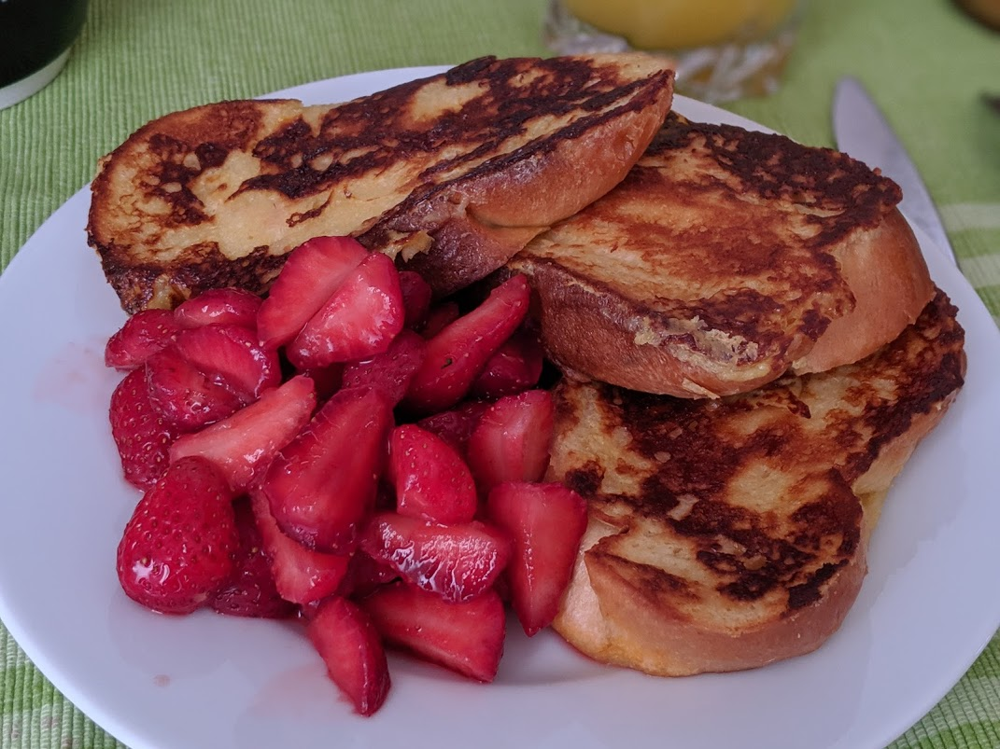

Pain perdu

Ici avec de la [tresse au beurre](https://fr.wikipedia.org/wiki/Tresse_au_beurre) à la place du pain rassis, accompagné de [fraises parfaites](FraisesParfaites.html)
Pour 3-4 personnes :
- 25cL de lait
- 3 œufs
- 75g de sucre roux
- Du pain rassis en tranches
- Un peu de beurre
- Fouetter les œufs avec le lait et le sucre.
- Y tremper les tranches de pain quelques minutes (ou moins si le pain n'est pas trop rassis).
- Faire fondre du beurre dans une poêle et y faire dorer chaque tranche de pain de chaque côté, jusqu'à ce que que ça brunisse de partout.
- Déguster tiède, soit simplement avec un peu plus de sucre roux et un peu de cannelle, soit de façon décadente avec de la confiture.
Remarque : on peut aussi faire ça avec du pain de mie en grosses tranches, ou encore mieux, avec de la brioche ou de la tresse au beurre.